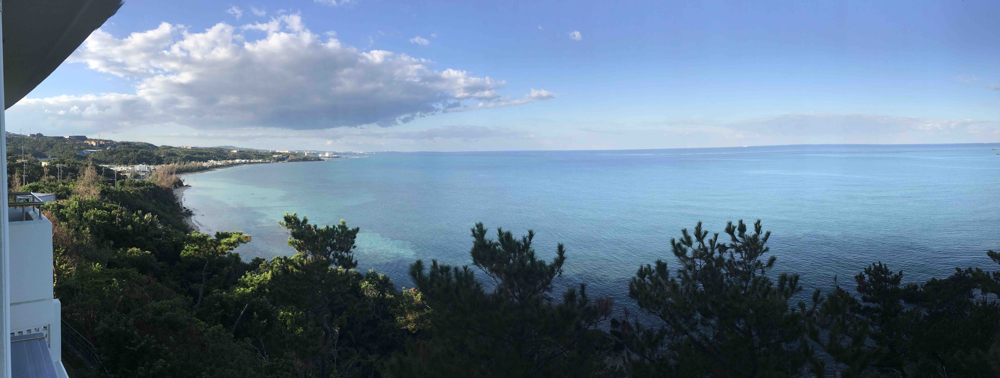

Publications

Paper
- Electroweak axion string and superconductivity,
Y. Abe, Y. Hamada, and K. Yoshioka,
hep-ph/2010.02834 - Gravitational instantons and anomalous chiral symmetry breaking,
Y. Hamada, J. M. Pawlowski, and M. Yamada,
hep-th/2009.08728 - Topological structure of Nambu monopole in Two Higgs doublet models -- Fiber bundle, Dirac's quantization and dyon --,
M. Eto, Y. Hamada, and M. Nitta,
hep-th/2007.15587 published in PRD 102(2020) 105018 - TeV-scale Majorogenesis,
Y. Abe, Y. Hamada, T. Ohata, K. Suzuki, and K. Yoshioka,
hep-ph/2004.00599 published in JHEP 07 (2020) 105 - Dynamics of Nambu monopole in two Higgs doublet models -- Cosmological Monopole Collider --,
M. Eto, Y. Hamada, M. Kurachi, and M. Nitta,
hep-ph/2003.08772, published in JHEP 2020 (2020) 4 - Obtaining the sphaleron field configurations with gradient flow,
Y. Hamada, and K. Kikuchi,
hep-th/2003.02070, published in PRD 101(2020) 096014 - Scalegenesis and fermionic dark matters in the flatland scenario,
Y. Hamada, K. Tsumura, and M. Yamada,
hep-ph/2002.03666, published in EPJC 80 (2020) no.5, 368 - Topological Nambu monopole in two Higgs doublet models,
M. Eto, Y. Hamada, M. Kurachi, and M. Nitta,
hep-ph/1904.09269, published in PLB 802 (2020) 135220 - A novel regularization of chiral gauge theory,
Y. Hamada, H. Kawai, and K. Sakai,
hep-th/1806.00349 - Axial U(1) current in Grabowska and Kaplan’s formulation,
Y. Hamada and H. Kawai,
hep-lat/1705.01317, published in PTEP 2017 (2017) 063B09
Thesis
- Master Thesis: カイラルゲージ理論の非摂動的定式化の研究,
Master of Science, Mar. 2018, Kyoto University,
Supervisor: Prof. Hikaru Kawai
© 2020 Yu HAMADA